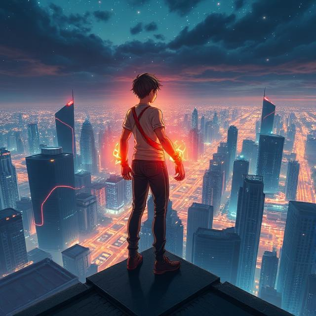
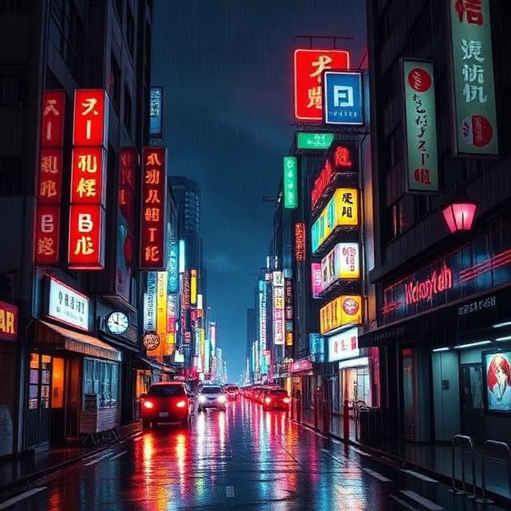
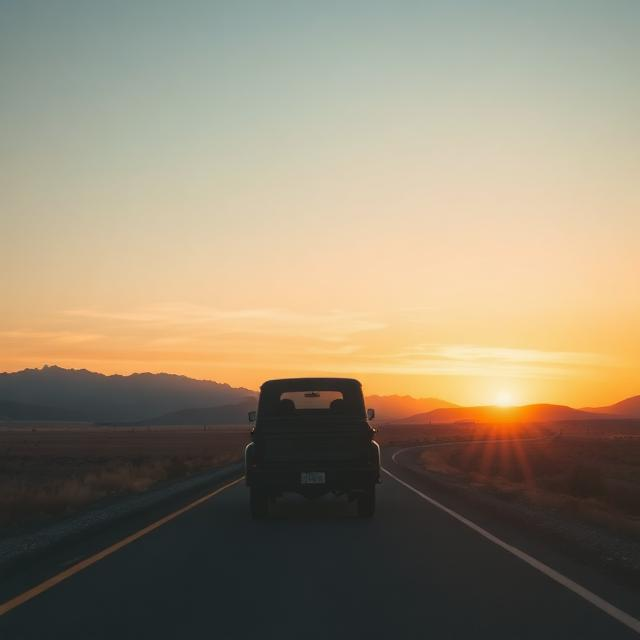

One Piece - Sea of Dreams
Adventure anime-inspired song about freedom, friendship, and chasing dreams across the ocean.
Created with Suno AI

My Hero Academia - Rise Up
An emotional hero anthem about overcoming weakness and becoming stronger.
Created with Suno AI
That Time I Got Reincarnated as a Slime
A fantasy rebirth story about building a new world from nothing.
Created with Suno AI
Neverland
A nostalgic journey back to childhood memories and imagination.
Created with Suno AI

The Red Pyramid
A mythological adventure inspired by ancient Egyptian gods and magic.
Created with Suno AI

Clockwork Angel
A steampunk-inspired story about identity, machines, and humanity.
Created with Suno AI
Hiking in Shanghai
A reflective journey through nature and mountains above the city.
Created with Udio AI
Paddle Boarding in Belize
A calm tropical vibe song about peace, water, and freedom.
Created with Udio AI

Chilling in Tokyo
A neon-lit city night vibe inspired by Tokyo’s energy and emotion.
Created with Udio AI

Traveling the World
A country-pop inspired road trip anthem about exploring the world.
Created with Udio AI